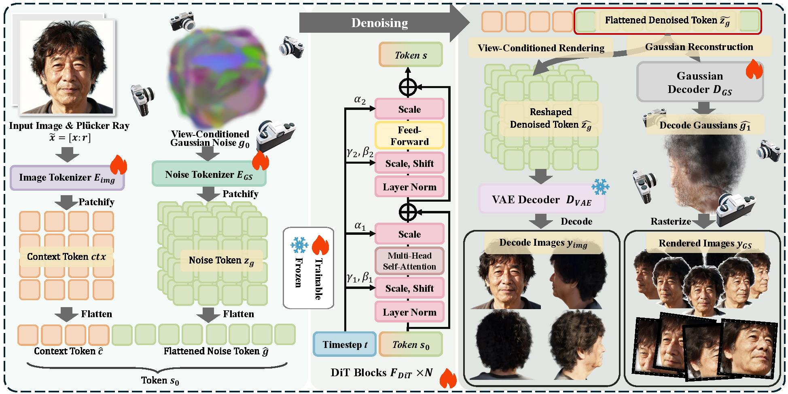
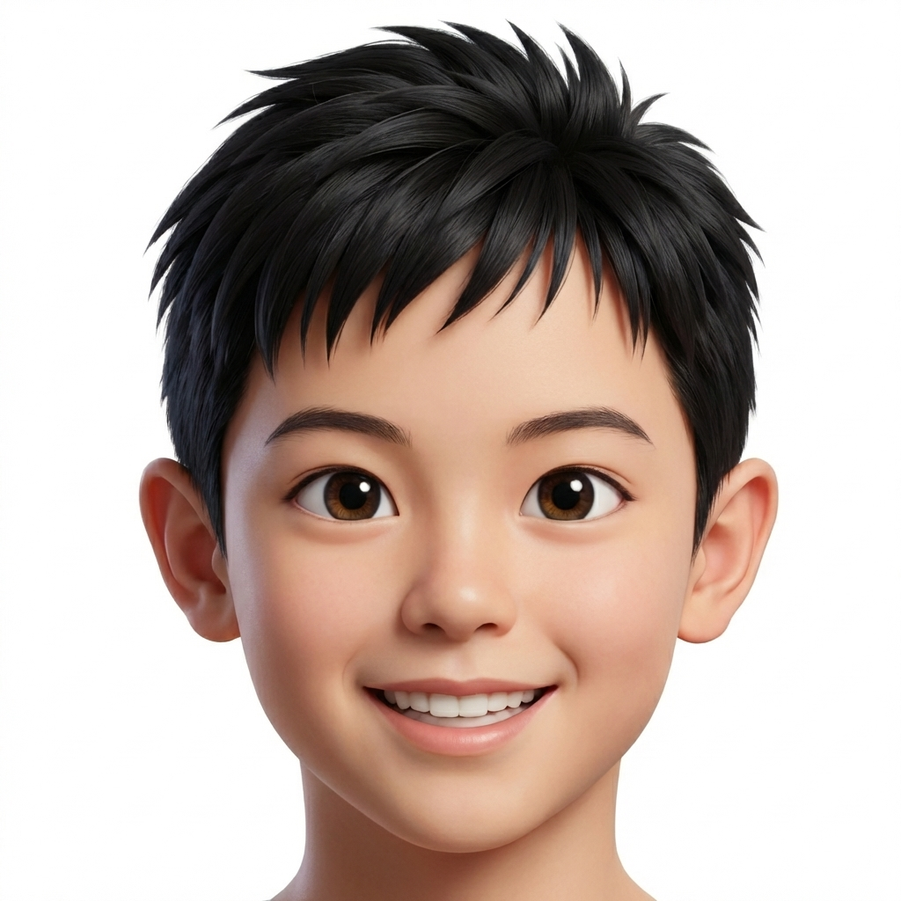
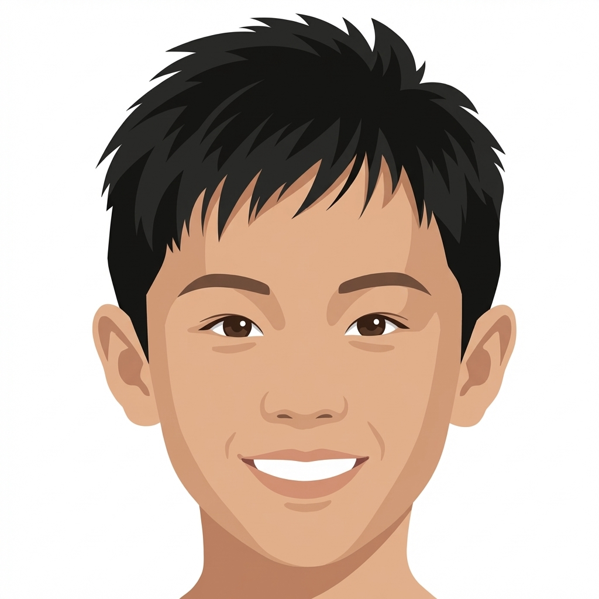
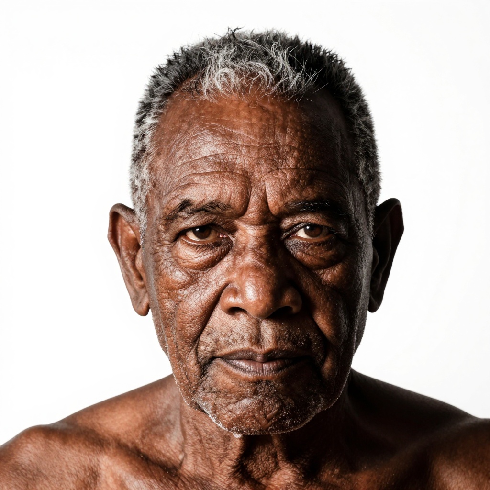

Reconstructing a complete 3D head from a single portrait remains challenging because existing methods still face a sharp quality-speed trade-off: high-fidelity pipelines often rely on multi-stage processing and per-subject optimization, while fast feed-forward models struggle with complete geometry and fine appearance details. To bridge this gap, we propose Any3DAvatar, a fast and high-quality method for single-image 3D Gaussian head avatar generation, whose fastest setting reconstructs a full head in under one second while preserving high-fidelity geometry and texture. First, we build AnyHead, a unified data suite that combines identity diversity, dense multi-view supervision, and realistic accessories, filling the main gaps of existing head data in coverage, full-head geometry, and complex appearance. Second, rather than sampling unstructured noise, we initialize from a Plücker-aware structured 3D Gaussian scaffold and perform one-step conditional denoising, formulating full-head reconstruction into a single forward pass while retaining high fidelity. Third, we introduce auxiliary view-conditioned appearance supervision on the same latent tokens alongside 3D Gaussian reconstruction, improving novel-view texture details at zero extra inference cost. Experiments show that Any3DAvatar outperforms prior single-image full-head reconstruction methods in rendering fidelity while remaining substantially faster.

Pipeline of Any3DAvatar. Given a single portrait, we extract image and Gaussian tokens, jointly denoise them with a DiT backbone, and decode the outputs into 3D Gaussian point clouds through a single-step feed-forward path at inference. During training, we additionally supervise the same tokens with a view-conditioned image decoding branch and a multi-task objective that combines reconstruction and perceptual losses.
Any3DAvayar lifts a single facial image to a detailed 3D reconstruction with preserved identity features.


